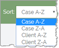

Click ECA & Review
on the
To sort by case or client, click the Sort down arrow located on the right side of the ECA & Review home page to display the sort options. Sorting does not impact the Favorites and Recent lists.

Choose a sort option.
Case Selection video
The following video provides a basic review of the Case Selection Screen functionality. The purpose of the video is to help you to:
Understand how to enter a case or batch
Effectively read the Case Selection pop-over
Understand how to organize the Case Selection screen